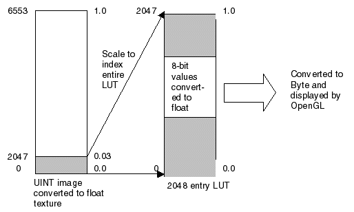
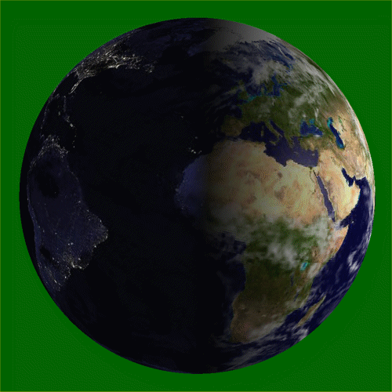

A shader object provides access to the hardware-based processing power available on some modern graphics cards. This allows computationally intensive image processing operations to be delegated to the Graphics Processing Unit (GPU) of a suitable graphics card, dramatically increasing performance and interactivity. A shader program can perform image filtering operations, complex lighting and shading calculations, interactive blending of multiple textures, animation of object vertices, or any combination of these.
Note: Setting IDLgrImage RENDER_METHOD =1 (do not render image as texture-mapped polygon) disables all shader functionality including the software-based alternative.
It is important to understand how OpenGL converts a high precision image to a texture map before writing a shader program. The graphics card vendor ultimately decides what formats are supported. Using the IDLgrImage INTERNAL_DATA_TYPE property, you tell OpenGL in what format you would like the texture stored. The following table describes the relationship between OpenGL types and the INTERNAL_DATA_TYPE property value.
|
OpenGL |
INTERNAL_DATA_TYPE Setting |
Description |
|
RGBA8 |
1 |
8-bit unsigned bytes per channel, widely supported |
|
RGBA16F |
2 |
16-bit floating point with 1 sign bit, 5 exponent bits and 10 mantissa bits |
|
RGBA32F |
3 |
32-bit floating point, which is standard IEEE float format |
An IDLgrImage will accept data of type BYTE, UINT, INT and FLOAT. When the texture map is created the data from IDLgrImage is converted to the type specified in INTERNAL_DATA_TYPE .
Note: If your image data is floating point, your fragment shader must scale it to the range 0.0 to 1.0 before writing it to gl_FragColor or you need to scale it to the range of 0.0 to 1.0 before setting it on the IDlgrImage.
If INTERNAL_DATA_TYPE is set to floating point (INTERNAL_DATA_TYPE equals 2 or 3), image data conversion is performed by OpenGL as follows where c is the color component being converted:
|
Image Data Type |
Floating Point Conversion |
|
BYTE |
c /(2 8 -1) |
|
UINT |
c /(2 16 -1) |
|
INT |
(2 c +1)/(2 16 -1) |
|
FLOAT |
c |
If INTERNAL_DATA_TYPE is 1 (8-bit unsigned byte), then the image data is scaled to unsigned byte. This is equivalent to a linear BYTSCL from the entire type range (for example, 0-65535) to unsigned byte (0-255).
Note: INTERNAL_DATA_TYPE of 0, the default, maintains backwards compatibility by converting the image data to byte without scaling.
To avoid data loss during conversion, you should choose an internal data type with sufficient precision to hold your image data. For example, with a 16-bit UINT image that uses the full range of 0-65535, if you set INTERNAL_DATA_TYPE to 2 (16-bit floating point), your image will still be converted to the range of 0.0 to 1.0, but some precision will be lost (due to the mantissa of a 16-bit float being only 10 bits). If you need a higher level of precision, set INTERNAL_DATA_TYPE to 3 (32-bit floating point). However, on some cards there may be a performance penalty associated with the higher level of precision, and requesting 32-bit floating point will certainly require more memory.
Once the image has been converted to a texture map it can be sampled by the shader. The GLSL procedure, texture2D , returns the sampled texel in floating point (0.0 to 1.0). Therefore, if the INTERNAL_DATA_TYPE is 1 (unsigned byte) the texel is converted to floating point, using c /(2 8 - 1), before being returned.
Objects of this class have no superclass.
See IDLgrShader::Init .
Objects of this class have the following properties. See IDLgrShader Properties for details on individual properties.
In addition, objects of this class inherit the properties of all superclasses of this class, if any.
This class has the following methods:
In addition, this class inherits the methods of its superclasses, if any.
This shader program example lets you interactively apply color level correction to an image when you view it. This does not modify the image data itself. This example places the original image data in an IDLgrImage object and attaches the custom shader object using the SHADER property. It then creates a simple user interface that lets you alter the color levels and passes these values to the shader program in a named uniform variable. The Filter method implements the software fallback. When the correct graphics hardware is unavailable, IDL automatically calls the Filter method.
Example Code:
See
shader_rgb_doc__define
.pro
, located in the
examples/doc/shaders
subdirectory of the IDL distribution, for the complete, working example. Run the example by creating an instance of the object at the IDL command prompt using
orgbshader=OBJ_NEW('shader_rgb_doc')
or view the file in an IDL Editor window by entering
.EDIT shader_rgb_doc__define.pro
.
The IMAGE_1D property on the IDLgrImage object lets you load color lookup table (LUT) values into a texture map and pass the LUT to a shader program. LUTs are useful for a number of tasks including:
Example Code:
See
shader_lut_doc__define
.pro
, located in the
examples/doc/shaders
subdirectory of the IDL distribution, for the complete, working example. Run the example by creating an instance of the object at the IDL command prompt using
oLUTshader=OBJ_NEW('shader_lut_doc')
or view the file in an IDL Editor window by entering
.EDIT shader_lut_doc__define.pro
.
In this example, the input image ( uiImageData ) is a 16-bit unsigned integer greyscale image that uses the full range of 0 to 65535. The goal is to display the entire range using a linear byte scale. Traditionally we'd use the BYTSCL function in IDL prior to loading data into the IDLgrImage object:
ScaledImData = BYTSCL(uiImageData, MIN=0, MAX=65535)
oImage = OBJ_NEW('IDLgrImage', ScaledImData, /GREYSCALE)
To have the GPU do the scaling, load the unscaled image data into the IDLgrImage and set INTERNAL_DATA_TYPE to 3 (32-bit floating point):
oImage = OBJ_NEW('IDLgrImage', uiImageData, $
INTERNAL_DATA_TYPE=3, /GREYSCALE, SHADER=oShader)
The fragment shader is extremely simple. Here, the reserved uniform variable, _IDL_ImageTexture , represents the base image in IDL:
uniform sampler2D _IDL_ImageTexture;
void main(void)
{
gl_FragColor = texture2D(_IDL_ImageTexture, gl_TexCoord[0].xy);
}
All we are doing is reading the texel with texture2D and setting it in gl_FragColor . You will notice that there is no explicit conversion to byte because this is handled by OpenGL. The value written into gl_FragColor is a GLSL type vec4 (4 floating point values, RGBA). OpenGL clamps each floating point value to the range 0.0 to 1.0 and converts it to unsigned byte where 0.0 maps to 0 and 1.0 maps to 255. So all we have to do is read the texel value from _IDL_ImageTexture and set it into gl_FragColor .
An 11-bit unsigned integer image is usually stored in a 16-bit UINT array, but with only 2048 (2 11 ) values used. For this example, let's say the minimum value is 0 and the max is 2047. Traditionally this would be converted to byte as follows:
ScaledImData = BYTSCL(uiImageData, MIN=0, MAX=2047)
oImage = OBJ_NEW('IDLgrImage', ScaledImData, /GREYSCALE)
To scale on the GPU we again load the image with the original data. This time INTERNAL_DATA_TYPE can be set to 2 (16-bit float) as this can hold 11-bit unsigned integer data without loss of precision:
oImage = OBJ_NEW('IDLgrImage', uiImageData, $
INTERNAL_DATA_TYPE=2, /GREYSCALE, SHADER=oShader)
The fragment shader looks like the following where _IDL_ImageTexture represents the base image in IDL:
uniform sampler2D _IDL_ImageTexture ;
void main(void)
{
gl_FragColor = texture2D( _IDL_ImageTexture , gl_TexCoord[0].xy) *
(65535.0 / 2047.0);
}
The only difference between this 11-bit example and the previous 16-bit example is the scaling of each texel. When the 16-bit UINT image is converted to floating point, the equation c /(2 16 - 1) is used so 65535 maps to 1.0. However, the maximum value in the 11-bit image is 2047, which is 0.031235 when converted to floating point. This needs scaled to 1.0 before being assigned to gl_FragColor if we want 2047 (image maximum) to map to 255 (maximum intensity) when the byte conversion is done. (Remember a value of 1.0 in gl_FragColor is mapped to 255.)
It's possible to implement the full byte scale functionality on the GPU, and let the user interactively specify the input min/max range by passing them as uniform variables. There is a performance advantage to doing this on the GPU as the image data only needs to be loaded once and the byte scale parameters are changed simply by modifying uniform variables. See IDLgrShaderBytscl and the associated example to see how this can be achieved.
The previous example applied a linear scaling to the 11-bit data to convert it to 8-bit for display purposes. Sometimes it's useful to apply a non-linear function when converting to 8-bit to perform contrast adjustments to compensate for the non-linear response of the display device (monitor, LCD, projector. and so on).
For an 11-bit image this can be achieved using a LUT with 2048 entries where each entry contains an 8-bit value. This is sometimes referred to as an 11-bit in, 8-bit out LUT, which uses an 11-bit value to index the LUT and returns an 8-bit value.
This is relatively simple to implement on the GPU. First create the 2048 entry contrast enhancement LUT and load it into an IDLgrImage which will be passed to the shader as a texture map.
x = 2*!PI/256 * FINDGEN(256) ;; 0 to 2 pi
lut = BYTE(BINDGEN(256) - sin(x)*30)
; Stretch to 2048 entry LUT.
lut = CONGRID(lut, 2048)
oLUT = OBJ_NEW('IDLgrImage', lut, /IMAGE_1D, /GREYSCALE)
oShader->SetUniformVariable, 'lut', oLUT
The image is created as before:
oImage = OBJ_NEW('IDLgrImage', uiImageData, $
INTERNAL_DATA_TYPE=2, /GREYSCALE, SHADER=oShader)
The fragment shader looks like the following where _IDL_ImageTexture represents the base image in IDL and lut is the lookup table.:
uniform sampler2D _IDL_ImageTexture ;
uniform sampler1D lut;
void main(void)
{
float i = texture2D( _IDL_ImageTexture , gl_TexCoord[0].xy).r *
(65535.0/2048.0);
gl_FragColor = texture1D(lut, i);
}
As you can see the texel value is scaled before being used as an index into the LUT.
The following figure shows how the 11-bit to 8-bit LUT is indexed. Only a fraction of the input data range is used (0-2047 out of a possible 0-65535). As 2047 (0.0312 when converted to float) is the maximum value, this should index to the top entry in the LUT. So we need to scale it to 1.0 by multiplying by 32.015. Now the range of values in the image (0-2047) index the entire range of entries in the LUT.
|
 |
Although this could be done on the CPU, it is much more efficient to do it on the GPU since the image data only needs to be loaded once and the display compensation curve can be modified simply by changing data in the IDLgrImage holding the LUT.
The following example uses an attribute variable to replicate the effect of wind on a set of particles. Each particle has an initial position and a velocity assigned to it. The initial position of the particle can be easily represented by the already-familiar vertex [ x , y , z ] information.
Example Code:
See
shader_vertexwinds_doc
.pro
, located in the
examples/doc/shaders
subdirectory of the IDL distribution, for the complete, working example. Run the example procedure by entering
shader_vertexwinds_doc
at the IDL command prompt or view the file in an IDL Editor window by entering
.EDIT shader_vertexwinds_doc.pro
.
This example displays an IDLgrSurface, and uses the vertex shader to displace part of it up and down in an animation sequence. It also changes the color of the displaced part slightly for additional emphasis. An ambient light and a positional light illuminate the surface.
Example Code:
See
shader_lightsurf_doc
.pro
, located in the
examples/doc/shaders
subdirectory of the IDL distribution, for the complete, working example. Run the example procedure by entering
shader_lightsurf_doc
at the IDL command prompt or view the file in an IDL Editor window by entering
.EDIT shader_lightsurf_doc.pro
.
The following multi-texturing shader program example provides the ability to interactively scrape away the section of clouds under the mouse cursor to see the earth below. Because this requires blending only a section of the image, using a shader program in this case is far easier than duplicating the outcome using only IDL.
Example Code:
See
shader_multitexture_doc
.pro
, located in the
examples/doc/shaders
subdirectory of the IDL distribution, for the complete, working example. Run the example procedure by entering
shader_multitexture_doc
at the IDL command prompt or view the file in an IDL Editor window by entering
.EDIT shader_multitexture_doc.pro
.
This example loads three images into textures: a base day image of the earth, a night image, and an image of clouds. It then draws the rotating earth showing a day scene on one side and a night scene (lights of big cities) on the other.
|
 |
In the IDL code:
; Tell the shader program about our textures.
oShader->SetUniformVariable, 'EarthDay', oDay
oShader->SetUniformVariable, 'EarthNight', oNight
oShader->SetUniformVariable, 'EarthCloudGloss', oClouds
oEarth->SetMultiTextureCoord, 0, tc
If the textures did not share the same coordinates, you could call SetMultiTextureCoord multiple times.
In the Shader Program:
This shader program was taken directly from Chapter 10 of the “Orange Book” (“OpenGL Shading Language”, Second Edition, by Randi J. Rost) and required no modifications to work with the IDL application, shader_earthmulti.pro .
Example Code:
See
shader_earthmulti
.pro
, located in the
examples/doc/shaders
subdirectory of the IDL distribution, for the complete, working example. Run the example procedure by entering
shader_earthmulti
at the IDL command prompt or view the file in an IDL Editor window by entering
.EDIT shader_earthmulti.pro
. The associated shader program files
earthVert.txt
and
earthFrag.txt
are located in the same directory.
|
6.4 |
Introduced |